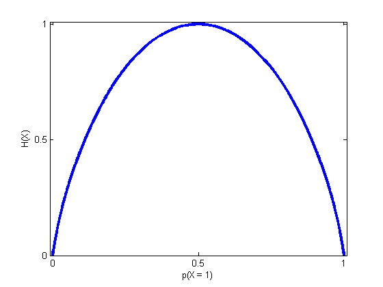

function bernoulliEntropyFig
close all;
x = 0:0.0001:1;
H = @(x) -(x.*log2(x) + (1-x).*log2(1-x));
plot(x,H(x),'-b','LineWidth',3);
axis([-0.01 1.01 0 1.01]);
xlabel('p(X = 1)');
ylabel('H(X)');
set(gca,'XTick',[0,0.5,1]);
set(gca,'YTick',[0,0.5,1]);
printPmtkFigure('bernoulliEntropy');
end
Warning: Log of zero. This warning will be
removed in a future release.
Consider using DBSTOP IF NANINF when
debugging.
Warning: Log of zero. This warning will be
removed in a future release.
Consider using DBSTOP IF NANINF when
debugging.
